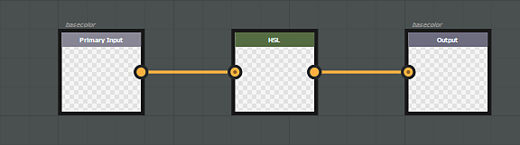
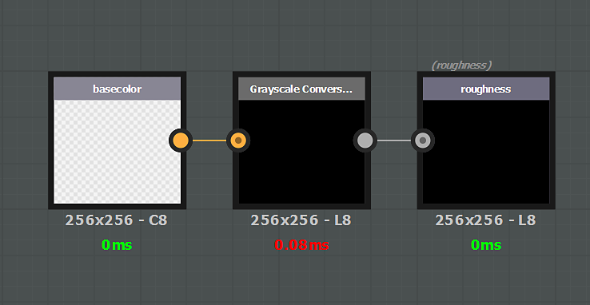
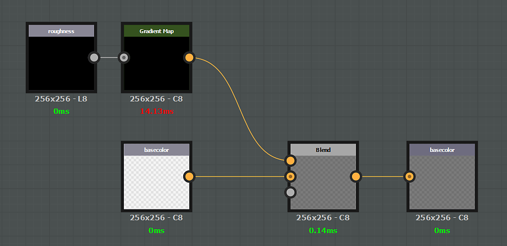

An effect can be specific to a particular channel. In that case, if you want to affect a specific channel, you need to create an input AND an output which identifies this channel. As a general rule, the input / output structure should always respect a 1:1 rule. If you want to input a specific channel, you have to output the same channel.
Example of a filter affecting the basecolor channel only :

It is not possible to combine generic setup (input/output nodes) and specific channels (basecolor/basecolor).
Channels stored as RGBA support alpha (basecolor for instance). For these channel, the alpha Input/Output can be stored directly in the Substance color output. However, the Substance engine does not support Alpha for grayscale images: it has to be managed using a secondary map. To get the alpha component of a specific channel in a substance graph, create a grayscale input named 'channelname_Alpha', example: basecolor_Alpha, roughness_Alpha and so on.
To output this alpha component, create an output node with the same name convention.
The specific "_Alpha" output per channel doesn't work with regular materials. To hide a channel with a mask, a specific output must be created with the following naming convention :
It is possible to use either the usage or the identifier in an input node (the usage has the priority).
| Channel name | Usage | Identifier / Identifier Alpha |
|---|---|---|
| Ambient Occlusion | ambientOcclusion | ambientOcclusion / ambientOcclusion_Alpha |
| Anisotropy Angle | anisotropyangle | anisotropyAngle / anisotropyAngle_Alpha |
| Anisotropy Level | anisotropylevel | anisotropyLevel / anisotropyLevel_Alpha |
| Base Color | basecolor | baseColor / baseColor_Alpha |
| Blending Mask | blendingmask | blendingmask / blendingmask_Alpha |
| Diffuse | diffuse | diffuse / diffuse_Alpha |
| Displacement | displacement | displacement / displacement_Alpha |
| Emissive | emissive | emissive / emissive_Alpha |
| Glossiness | glossiness | glossiness / glossiness_Alpha |
| Height | height | height / height_Alpha |
| IOR | ior | ior / ior_Alpha |
| Metallic | metallic | metallic / metallic_Alpha |
| Normal | normal | normal / normal_Alpha |
| Opacity | opacity | opacity / opacity_Alpha |
| Reflection | reflection | reflection / reflection_Alpha |
| Roughness | roughness | roughness / roughness_Alpha |
| Scattering | scattering | scattering / scattering_Alpha |
| Specular | specular | specular / specular_Alpha |
| Specular Level | specularlevel | specularLevel / specularLevel_Alpha |
| Transmissive | transmissive | transmissive / transmissive_Alpha |
| User 0 | user0 | user0 / user0_Alpha |
| User 1 | user1 | user1 / user1_Alpha |
| User 2 | user2 | user2 / user2_Alpha |
| User 3 | user3 | user3 / user3_Alpha |
| User 4 | user4 | user4 / user4_Alpha |
| User 5 | user5 | user5 / user5_Alpha |
| User 6 | user6 | user6 / user6_Alpha |
| User 7 | user7 | user7 / user7_Alpha |

In this example the Base Color alpha channel is extracted via a grayscale node to overwrite the Roughness channel.

In this example the Roughness channel is multiplied over the Base Color.